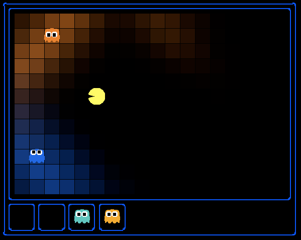

I can hear you, ghost.
Running won’t save you from my
Particle filter!
Pacman spends his life running from ghosts, but things were not always so. Legend has it that many years ago, Pacman’s great grandfather Grandpac learned to hunt ghosts for sport. However, he was blinded by his power and could only track ghosts by their banging and clanging.
In this lab, you will design Pacman agents that use sensors to locate and eat invisible ghosts. You’ll advance from locating single, stationary ghosts to hunting packs of multiple moving ghosts with ruthless efficiency.
The code for this lab contains the following files, available as a zip archive lab-4-tracking.zip.
Files you’ll edit:
| file | purpose |
|---|---|
bustersAgents.py |
Agents for playing the Ghostbusters variant of Pacman. |
inference.py |
Code for tracking ghosts over time using their sounds. |
Files you will not edit:
| file | purpose |
|---|---|
busters.py |
The main entry to Ghostbusters (replacing Pacman.py) |
bustersGhostAgents.py |
New ghost agents for Ghostbusters |
distanceCalculator.py |
Computes maze distances |
game.py |
Inner workings and helper classes for Pacman |
ghostAgents.py |
Agents to control ghosts |
graphicsDisplay.py |
Graphics for Pacman |
graphicsUtils.py |
Support for Pacman graphics |
keyboardAgents.py |
Keyboard interfaces to control Pacman |
layout.py |
Code for reading layout files and storing their contents |
util.py |
Utility functions |
Files to Edit and Submit: You will fill in portions of bustersAgents.py and inference.py during the assignment. You should submit these files with your code and comments. Please do not change the other files in this distribution or submit any of our original files other than these files.
Evaluation: Your code will be autograded for technical correctness. Please do not change the names of any provided functions or classes within the code, or you will wreak havoc on the autograder. However, the correctness of your implementation – not the autograder’s judgements – will be the final judge of your score. If necessary, we will review and grade assignments individually to ensure that you receive due credit for your work.
Academic Dishonesty: We will be checking your code against other submissions in the class for logical redundancy. If you copy someone else’s code and submit it with minor changes, we will know. These cheat detectors are quite hard to fool, so please don’t try. We trust you all to submit your own work only; please don’t let us down. If you do, we will pursue the strongest consequences available to us.